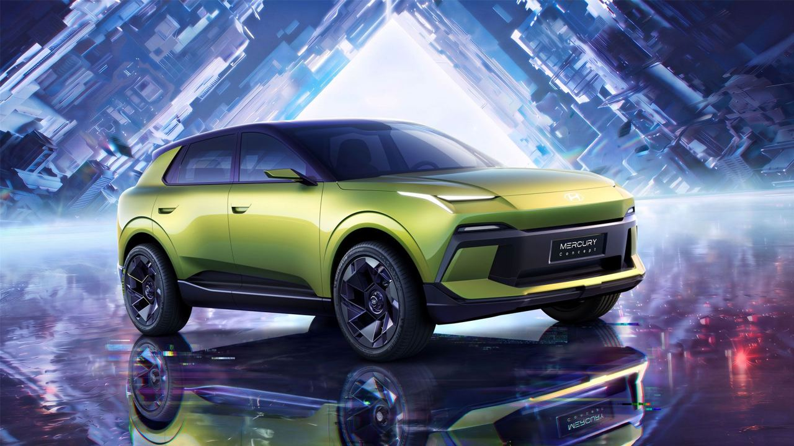
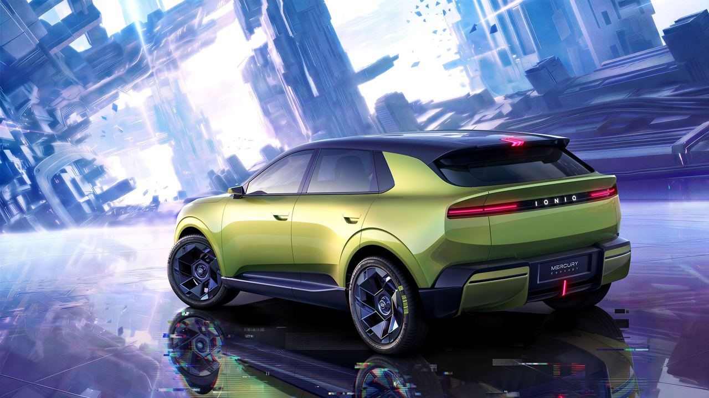
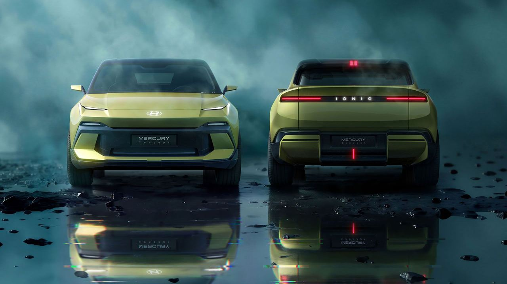

Hyundai 現代 · 全球首發 · 廣州車展2026-11-27
Hyundai MERCURY Concept 全球首發：鯊魚鼻車頭用燈光拼出「H」，預告中國專屬 IONIQ M
Hyundai Motor Accelerates China Expansion with Showcase of IONIQ Brand and Flagship Vehicles at Auto Guangzhou 2026
Hyundai 11/27 在廣州車展全球首發 MERCURY Concept，是 IONIQ 為中國市場推出的第三款概念車，定位 B 級純電休旅、IONIQ 家族最入門的車型。量產版命名 IONIQ M，2027 年在中國上市，之後還會和 CATL 合作推出換電版。
設計解析 Design Notes
- 鯊魚鼻與 H 字燈車頭是低趴的鯊魚鼻（shark-nose）造型，細長的邊緣燈號在車頭拼出 Hyundai 的「H」圖形。
- 水星軌道的比例官方說輪廓取材水星快速公轉的軌跡，擋風玻璃傾角很大、車尾整合式擾流，整體比例偏向低矮跑格。
- Citrine Neon 黃綠漆專屬的 Citrine Neon 黃綠色車漆，Carscoops 指出車頭中段改用深灰對比；車身各處還藏有「M」字彩蛋。
- 中國團隊主導由 Hyundai 在中國的設計與工程團隊開發，量產版會搭卓馭 L2++ 輔助駕駛與字節跳動豆包 AI 座艙；Carscoops 預期量產版除後照鏡外會很接近概念車。